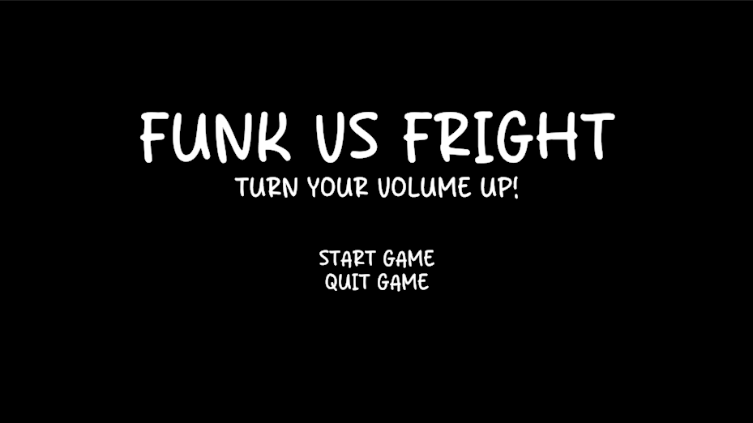
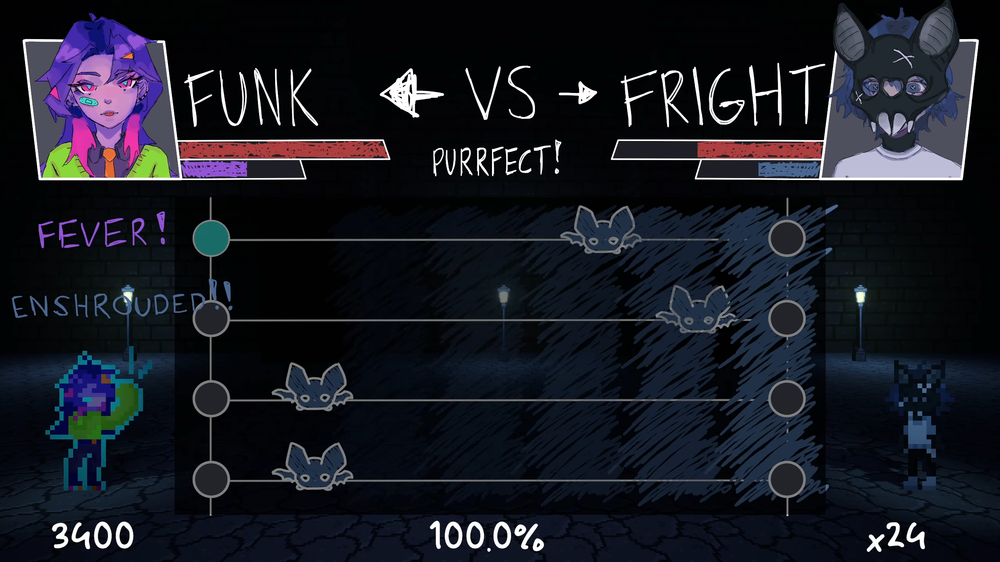
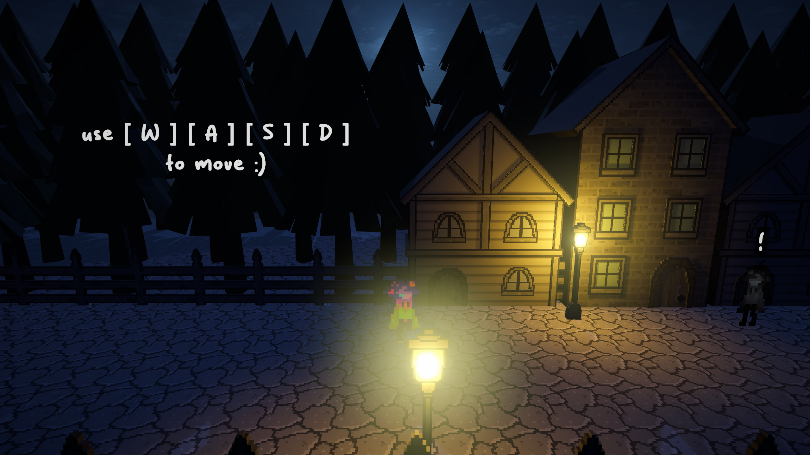
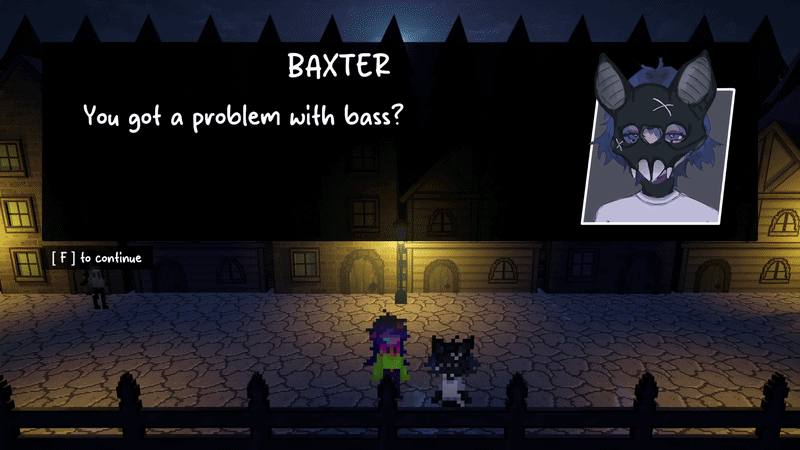
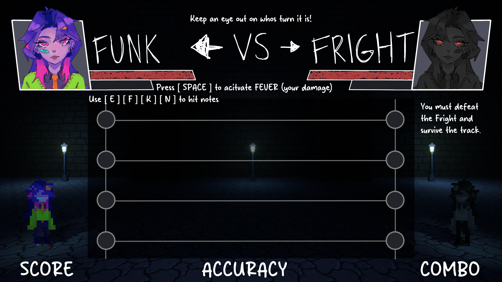
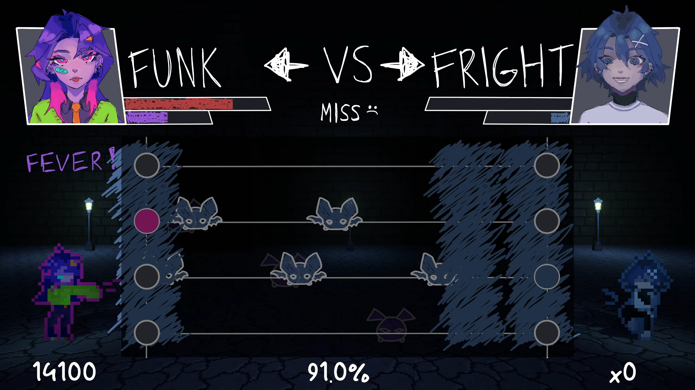
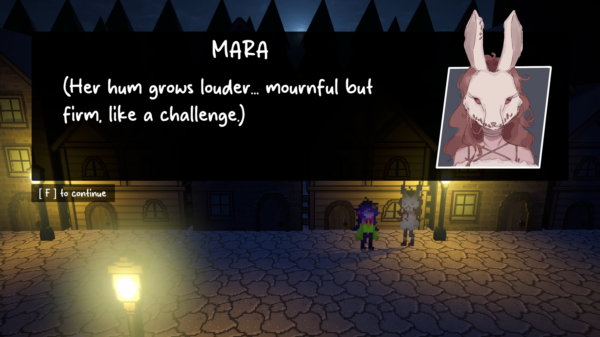
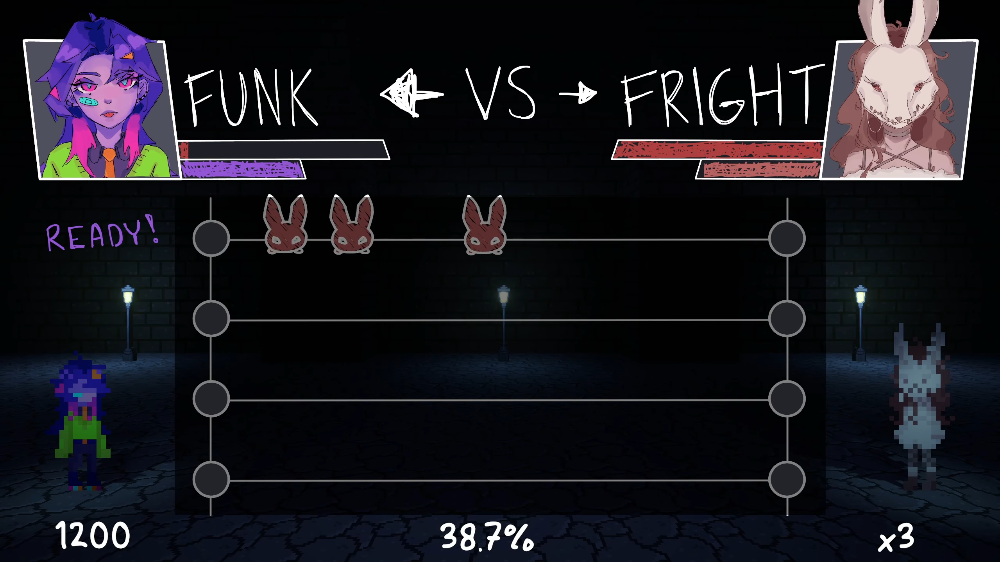

GALLERY










Project Lead • Technical Artist • UI & Narrative Designer • Animation
Funk VS Fright is a 2.5D rhythm combat game where players fight through timed musical attacks in a stylized horror-inspired world. The experience blends rhythm mechanics with cinematic combat presentation, where success is determined by precision timing and pattern recognition.
Developed as a game jam project, this game explores how rhythm systems can be translated into combat encounters with narrative framing. The focus was on aligning gameplay timing, visual feedback, and audio structure into a single cohesive loop under a strict production timeline.
Project Lead
4 Developers
10 days
Unity
Ensured combat actions remained tightly synchronized with musical timing without drift across gameplay loops.
Balanced leadership, design, and implementation under extreme time constraints while keeping scope stable.
Designed UI and visual systems that communicated timing windows clearly during fast-paced rhythm sequences.








This project reinforced how tightly coupled systems (audio, animation, UI, gameplay) must be when working under game jam constraints, and how important scope control is for shipping cohesive experiences quickly.
Emily Tran
Project Lead • Technical Artist • UI & Narrative Designer • Animation
Nathan Lam
Environment Artist • Programmer
Angela Santos
Audio Designer • Level & Narrative Designer
William Licup
Gameplay Programmer • Narrative Support